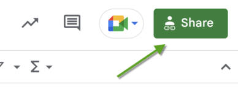

About Sparnatural
Sparnatural is a Typescript component that allows users to explore an RDF Knowledge Graph
by building SPARQL queries intuitively. It is configurable to adapt to your knowledge graph ontology.

How do you explore your knowledge graph ?
Maybe you have lists of entities. Or a search engine. Maybe you have facets. Maybe you even have data-visualisation. But can you explore your knowledge graph really as a graph ? This is what Sparnatural does.
Have you ever been frustrated by not being able to show - and to sell - all this nice structured data you have aggregated in your graph ? Sparnatural can demonstrate the value of heterogeneous data integration.
Are you looking for a solution that can bring your knowledge graph to your end-users ? Sparnatural is the right tool for this : it allows try-and-error interactions, it is visual, and it "gamifies" the knowledge graph experience.
End-User interface for your SPARQL endpoint

Adapt to your ontology
Sparnatural can be configured to adapt to your graph structure. You can hide some of the complexity of your graph, and simplify the navigation for your users. Configuration is made through an OWL ontology, fully documented.
Client-only (no additionnal server required)
Sparnatural is pure client javascript and can be plugged to any existing SPARQL endpoint, without additionnal server required.
Free and open-source
Sparnatural license is LGPL-3.0, which means you are free to integrate it in your website. Any modification you make inside the source code of Sparnatural needs to be distributed with the same license, or contributed to the original project.
Fully customizable
Sparnatural offers different widgets for value selection : dropdown lists, ordered by occurrence count or alphabetically, autocomplete search fields, date pickers, tree widgets... this is all part of Sparnatural configuration.
Try & download
Test one of the demo, or create your own demo page ! You can also download from Github and start using !
Demos
ELI : Legilux (Luxembourg legislation)
Legislation, EU transpositions, citations, modifications, abrogation links, from the Legilux data platform. The model is similar to the ELI ontology.
OWL : ICD-10 Medical terminology
Diseases of the ICD-10 terminology published in the French Multi-Terminology Server in an OWL-based structure.
CIDOC-CRM / Doremus : Music scores
Music scores from the Cité de la Musique / Philharmonie de Paris, described using CIDOC-CRM and its Doremus extension for music.
Référentiel d'interopérabilité du médicament
Pharmaceutical Products (PhPID 1,2,3,4), Actual Medicinal Products, Packaged Products, Substances. See all details about the dataset in the notice from the Serveur Multiterminologies, and you can also browse the full content.
Who uses Sparnatural ?
Here some current deployments of Sparnatural
Contact us if you want to appear in the list above
dati.camera.it (Italian Parliament)
A Sparnatural project based on the data from the Chamber of Deputies of the Italian Parliament.
The Members' Camera open data portal promotes access, reuse and dissemination of Camera data.
FRBR/LRM : data.bnf.fr (French National Library)
Works, editions, authors, dates. The model is an LRM-like custom model.
This is now deployed in production at https://data.bnf.fr/sparnatural
Notarial archives kept by the Archives nationales of France, described using RiC-O
Descriptions of notarial archives, converted to a knowledge graph conforming to ICA Records in Contexts ontology, using mainly the RiCO converter software
Open Archaeo, semantic web platform for archaeological data
A deployment of Sparnatural here for the MASA consortium, exploiting the archaeological triplestores paired with the CIDOC in a federated way.
Huma-Num, French Very Large Research Infrastructure (IR*)
Dedicated to research data, Huma-Num infrastructure is devoted to Social Sciences and Humanities. Sparnatural component is querying NAKALA triplestore.
The Netherlands' Cadastre
A Sparnatural project using the Dutch Kadaster's knowledge graph combined with Triply's map plugin to display geo data.
FranceArchives, the national aggregator of French archives
Sparnatural module here brings further assistance on querying RiC-O (Records in Contexts) & schema.org structured data.
Make your own Sparnatural demo page
You can easily build your own demo page from our template in 4 steps. The only prerequisite is to know a SPARQL endpoint URL to which the generated queries will be sent.
1 - Create your configuration Spreadsheet
Build a new Google Spreadsheet using our template. Click the button below to copy the template to your own Google Drive account.
Your will use this spreadsheet to configure the classes, properties, icons, etc. of Sparnatural. More detailled documentation will come on how to fill in the spreadsheet.
2 - Share your Spreadsheet
Once filled in, your spreadsheet needs to be publicly visible. You need to share it with the "Anyone with the link = Viewer" option. To do this, select the option Share.

In the next window, click the "General access" button. Select the "Anyone with the link" option and press the "Done" button.

After you close the window, copy the URL in your browser's address bar. You'll use this in the next step.
3 - Generate your Sparnatural demo page
Copy/paste the Google Spreadsheet URL into the first field below. Enter the URL of your SPARQL endpoint in the second field. Then press the Generate button to generate the URL to your demo page.
4 - Share Link
Use this link directly to your Sparnatural demo page, or click the button below to open it directly in a new tab.
Bibliography
Videos, presentations and events featuring Sparnatural
-
2023-05-28 - ESWC 2023
Accepted short paper (5 pages) at ESWC 2023 (Extended Semantic Web Conference).
-
(fr) 2022-11-08 - Semweb.pro
Presentation of Sparnatural in French at the semweb.pro 2022 (in French), complemented by two screencasts videos : the screencast of the BNF demonstrator, and the screencast of the AN demonstrator.
The video recording of the presentation is available on the SemWeb.pro Peertube.
-
(en) 2022-06-17 - Return of experience on the project Sparnatural : a tool to explore cultural heritage knowledge graphs(fr) 17/06/2022 - Restitution du projet Sparnatural : un outil pour explorer des graphes de métadonnées culturelles
(fr) Les Archives nationales, la BnF et le département du Numérique pour la transformation des politiques culturelles et l’administration des données [DEPNUM] du ministère de la Culture se sont associés en 2021 pour mener à bien un projet visant deux objectifs :
- 1) développer une nouvelle version de Sparnatural, un éditeur open source de requêtes SPARQL (qui est le langage utilisé pour faire des recherches dans des graphes RDF) ;
- 2) mettre en place deux démonstrateurs web pleinement opérationnels, pour permettre l’exploration et la recherche intuitives dans des graphes de métadonnées culturelles grâce à des interfaces construites à l’aide de cet outil.
Le projet a été réalisé dans le cadre d’un marché public confié à la société Sparna. La BnF (les responsables de data.bnf.fr) a donc construit avec Sparna un démonstrateur web pour interroger l’ensemble de ses données RDF, soit tout le contenu de data.bnf.fr. Les Archives nationales (le Lab, en concertation avec le département du Minutier central des notaires des Paris) ont construit avec Sparna un démonstrateur web qui permet d’interroger les métadonnées décrivant un tiers des archives notariales conservées aux Archives nationales, qu’elles ont préalablement converties en RDF conformément à l’ontologie RiC-O.
Les supports de la restitution sont disponibles en téléchargement :
- La présentation de la stratégie sémantique du ministère de la Culture
- La présentation du projet : enjeux, déroulement, principaux résultats
- La présentation de Sparnatural : fonctionnalités, configuration, utilisation, futur du projet (et sa variante d'origine en PPT)
- Le démonstrateur de la BnF : explorer les données de data.bnf.fr
- Le démonstrateur des Archives nationales : sémantiser et explorer les métadonnées des archives notariales
- La présentation du projet OpenArchaeo
(30/09/2022) : L'enregistrement vidéo de l'évènement est maintenant disponible sur la chaine DailyMotion des Archives Nationales.
-
(fr) 2022-05-21 - Colloque Humanistica
Presentation of Sparnatural at the Humanistica 2022 Colloque (in French)
-
(fr + en) 2022-03-01 - Europeana : Building the common European data space for cultural heritage together
Video of presentation of Sparnatural (French, subtitles in English) (6:50)


{kind=link}
{kind=link}
{kind=link}
{kind=link}
{kind=link}
{kind=link}

Thomas Francart - Web of data and knowledge graph services.
RDF OWL SPARQL SHACL SKOS FRBR CIDOC-CRM RIC-O